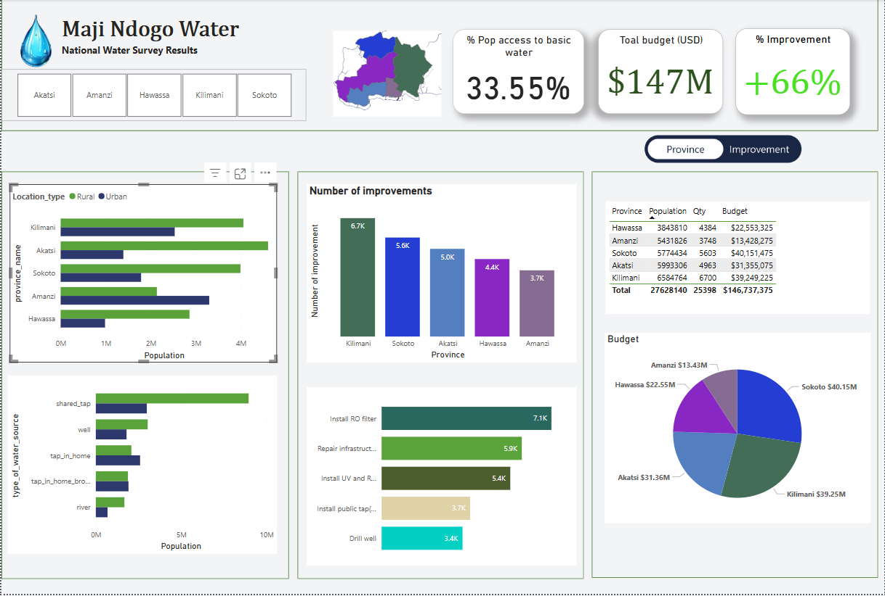

Published Writing
Shipping Payments Products Under Regulation: A Product Owner's Reality
African Fintech Library, Builders in Fintech · February 2026 · Founding contributor
A first-person account of rebuilding an agency banking platform inside a regulated institution: running competitive analysis to find the real edge (network stability, not price), the documentation and UAT grind, the dependency on third-party rails (NIP, NFACE, NQR, cash-out and purchase services), and the August 2025 CBN circular mandating ISO 20022 migration and terminal geo-tagging, which forced fresh NIBSS recertification mid-roadmap. Peer reviewed and published by Builders in Fintech.
Product Work
Agency Banking Platform Rebuild
9 Payment Service Bank (9PSB) · Product Manager
Ground-up rebuild of an agency banking platform serving 30,000+ active agents and merchants: agent onboarding, wallets, cash-in/cash-out, transfers, bill payments, and commission management. Roadmap shaped by competitive and pricing analysis against Nigeria's leading agent-network operators (OPay, Moniepoint, PalmPay). 20% month-on-month transaction volume growth since platform stabilisation.
Trained 50+ Service Location Partners at launch; they went on to onboard 2,000+ agents in the following quarter. I also run API partner onboarding and UAT sessions, and brief ops, support and field teams ahead of releases.
Fintech API Suite: Virtual Accounts & Wallet-as-a-Service
9 Payment Service Bank (9PSB) · Product Manager
Own the bank's API product suite: static and dynamic Virtual Account APIs and Wallet-as-a-Service (WaaS). Evaluated 100+ third-party fintech partner use cases for product fit and guided integrations to certification at a 90% success rate. I write the API specifications engineering builds from and validate releases through Postman and SQL-level checks.
Terminal Management System (TMS) Portal
9 Payment Service Bank (9PSB) · Product Manager
Rebuild of the bank's TMS portal covering terminal provisioning, health monitoring, transaction visibility, and reconciliation for the POS fleet, with 99% uptime across agency banking and API infrastructure.
Onboarding Funnel Rebuild
9 Payment Service Bank (9PSB) · Product Manager
The brief said the onboarding screens were the problem. Running the funnel myself in SQL and Power BI showed the drop was at identity verification, where a failed check returned no message and left the user with nothing to do next. We held the verification standard where it was and rebuilt the failure path instead: explicit failure reasons, a defined retry route, and instrumentation at each step. Verification failures fell 20% and monthly active users rose 40%, with the control untouched.
VendaHQ: Two-Sided Event Vendor Platform
Co-Founder & Product Lead
Co-founded a platform connecting clients with vetted event vendors across Nigeria. Designed the full product experience from scratch: vendor verification, discovery, and booking flows, with 15 vendors onboarded through a structured verification and onboarding process.
"VendaHQ, you guys beat my expectations today, despite the fact I was late to the office to get my delivery. The small chops that were delivered got the whole office staff talking, wanting to order more. Thank you for your prompt and excellent delivery, and cheers to the beginning of our partnership."
— Ayomikun, Human Resource Professional, Leadway
Consulting Work
TRISEG: Digital Trade Readiness for SME Exporters
TFO Canada · Digital Consultant
Consulting on a trade readiness project helping Nigerian SMEs digitalize for export: assessing digital maturity, building e-commerce capability, and advising on cross-border trade facilitation so small businesses can reach international buyers.
African Market Corner: Digital Presence & E-commerce
Digital Consultant
Running the digital side of an African foods business end to end: online presence, product catalogue, payment collection, and the operational processes behind digital sales.
"Timileyin is a committed and very hardworking individual. What struck me most is his level of responsiveness and his digital domain expertise."
— Nancy, African Market Corner
Data & Analytics Work
Product decisions are only as good as the analysis behind them. A selection of my SQL and Power BI work.
The projects below are my capstone work from the ALX Africa Data Analytics programme, built on the Maji Ndogo dataset provided in the ALX curriculum. The SQL and the dashboard design are mine; the dataset and the brief are ALX's. Analysis I have run on live production data sits under Product Work above.
Dashboard Designs
Power BI dashboards, shown as exported screenshots. Repositories contain the underlying project files.
Performance and Impact Assessment Dashboard
A national water survey dashboard tracking water access, budget allocation, and infrastructure improvements across provinces. Surfaces population access (33.55%), total budget ($147M), and improvement rate (+66%), with drill-downs by province, town, improvement type and vendor. Modelled as a star schema in Power BI.

Operational Efficiency Dashboard
A national water improvement dashboard covering project completion, cost variance against budget, and vendor cost comparison to detect high-cost outliers.

SQL Projects
Exploratory data analysis, cleaning, and integrity checking.
-
Ensuring Data Integrity for Water Safety
Advanced SQL analysing visit patterns, water source reliability and contamination levels, including correcting records mislabelled as clean despite biological contamination above threshold.
-
Data Cleaning and Validation with Complex Queries
Cleaning, analysing and ranking data to produce actionable insight on water access.
-
Validation and Integrity Checks
Comparing surveyor and auditor scores to identify errors and flag employees with unusual mistake patterns, surfacing probable data manipulation and establishing accountability.
-
From Analysis to Implementation
Translating the analysis into prioritised interventions, so the findings drove real-world action rather than a report.